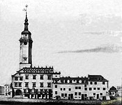

І с т о р і я Л ь в о в а

Львів - найбільше місто Західної України, що протягом багатовікової історії було науковим, культурним та національним центром регіону.
В найдавніші часи - столиця Галицько - Волинської держави, згодом - адміністративний центр Руського
воєводства, автономного Королівства Галіції і Лодомерії.
У 1920 1980 році - столиця ЗУНР. Після захоплення міста Польщею Львів став центром однойменного воєводства. У Другій світовій війні був окупованим спочатку радянською
, а потім німецькою арміями. У повоєнний період відійшов до Рядянського Союзу. З 1991 року - адміністративний центр
Львівської області Незалежної України.
Зміст
- ЧАСТИНА 1
- Заснування
- 1253-1349: Руське Королівство (Галицько-Волинська держава): протистояння з Золотою Ордною
- 1349-1387: Руське Королівство: протистояння з Польщею та Угорщиною
- 1387-1772: Під владою Польського королівства та Речі Посполитої
- 1772-1914: У складі Австрійської (згодом Австро-Угорської) імперії
- ЧАСТИНА 2
- 1914-1919: у період Першої світової війни та Української революції
- 1919-1939: у складі Другої Речі Посполитої
- 1939-1944: у період Другої світової війни
- 1944-1991: у складі Радянського Союзу
- Після 1991: у Незалежній Україні